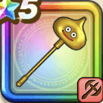

金のスライムハンマー
攻略班 6.0点 / かぶとわりやいばくだきまじん斬り改金のスライムシャワー
くわしい特徴
【レベル別習得スキル】 Lv1かぶとわり（消費MP：8）敵1体に威力150%の斬撃ダメージを与え、たまに守備力を1段階下げる Lv15やいばくだき（消費MP：10）敵1体に威力150%の斬撃ダメージを与え、たまに攻撃力を1段階下げる Lv20まじん斬り改（消費MP：10）敵1体に40%の確率で斬撃ダメージの会心の一撃を与える Lv30金のスライムシャワー（消費MP：30）敵全体に威力230%の体技ダメージを与える Lv40鳥系へのダメージ+3% Lv45さいだいHP+10 Lv50守備力+4 【限界突破スキル】 1凸金のスライムシャワーのダメージ+5% 2凸金のスライムシャワーのダメージ+5% 3凸金のスライムシャワーのダメージ+10% 4凸金のスライムシャワーのダメージ+20%